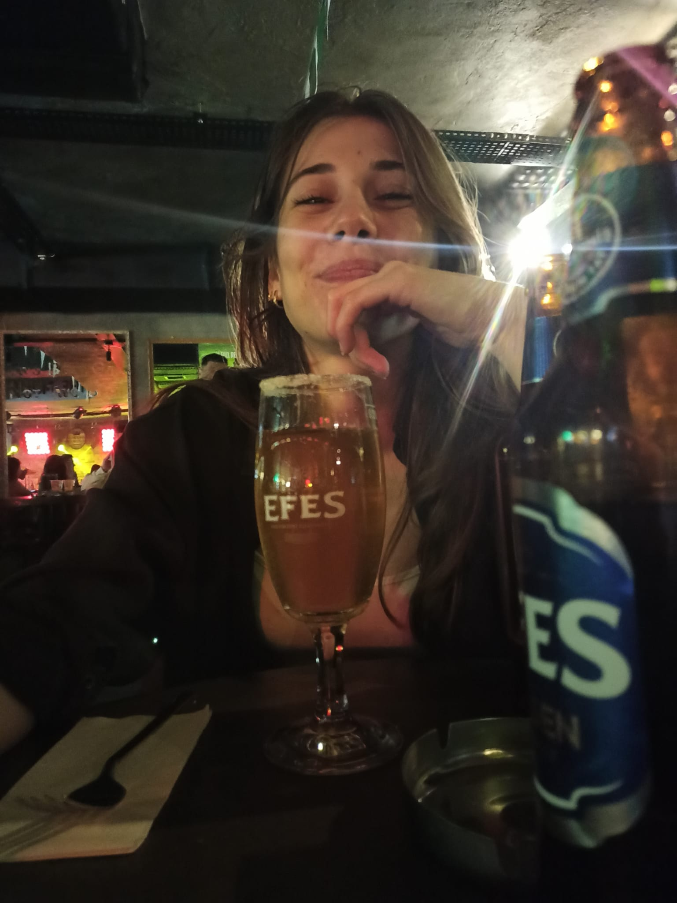

İşte AŞIK olduğum Kadın Burada Karşınızda.
İyi ki hayatımda varsın; hayatıma neşe, mutluluk ve geleceğe dair güzel hayaller kurduran Canım Sevgilim.
Bir arada daha nice anılarda buluşmak üzere...
Şimdilik öpüyorummmmm seni 🍯🍯